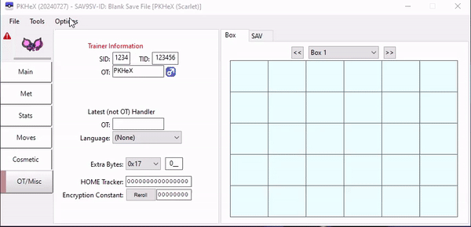

This page contains a quick and easy guide on how to find your internal TID/SID in Brilliant Diamond and Shining Pearl using PKHeX. These values are necessary to accurately display target frames and internal information when using PokeFinder to calculate target frames.
Programs may be unable to run on your machine unless you install the following dependencies:
First, launch PKHeX and change the blank save file to the game you are currently using in the settings (pictured below). In this case we will be changing the game to either Brilliant Diamond or Shining Pearl.
Figure 1 - PokeFinder Overview After the settings have been configured properly, you will now need a means to view a Pokemon within your safe file. This can be done using the following methods: